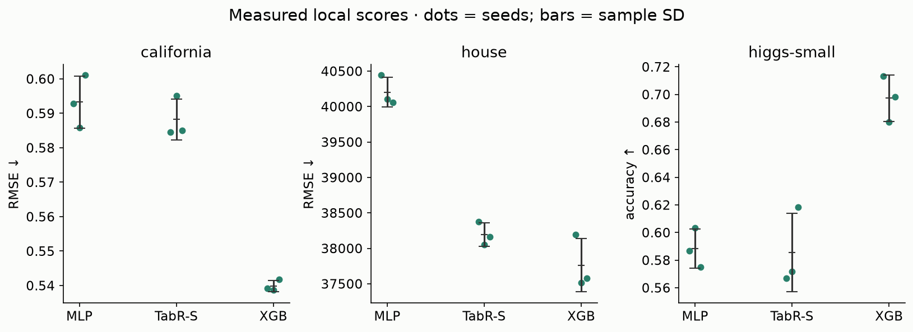
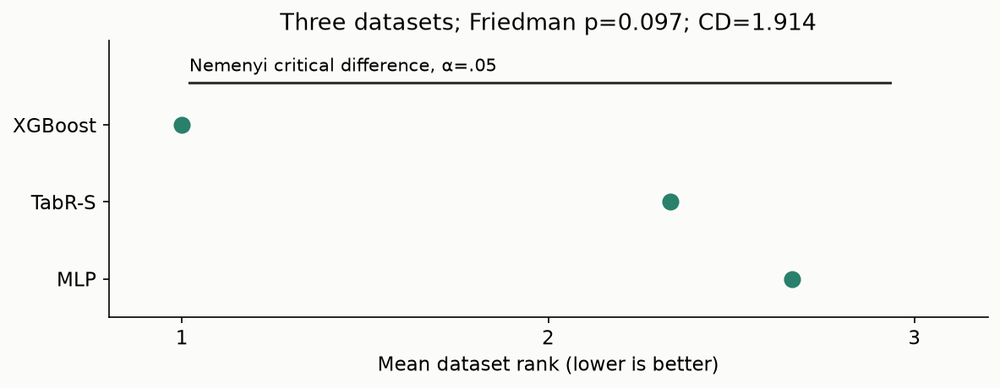

Year 2 · Quarter 2 · Lesson 052
TabR: learn what to retrieve
Trace a prediction through a learned neighborhood, then audit which labels it may see.
Lesson 51 asked what makes a learning problem easy or difficult. TabR changes where the model can obtain evidence: it keeps labeled training rows available during prediction. Your tangible win is a working retrieval module whose neighbor identities, weights, values and legal information you can explain. This strengthens the relational mission’s baseline: a single-table model can already consult other rows, so an RDL gain must exceed more than a row-isolated MLP.
Read the mechanism and answer the checks first; complete the notebook over one or more sessions. The notebook repeats the necessary explanation and shows the entire implementation. The primary source is Gorishniy et al., TabR, v2 (2023); start with §3.2, Figures 2–4 and Equation 5.
Recall before reading
1. What changes when a model keeps a memory?
A parametric predictor stores the information it learned in its parameters: weights and biases. After fitting, an ordinary MLP maps the new row’s features directly to a prediction. A retrieval-augmented predictor also consults a collection of stored examples. The collection is its candidate memory; the examples selected for one prediction are its context. In TabR the usual candidates are labeled training rows. The query is the row we want to predict, not its unknown target.
Ordinary k-nearest neighbors selects k nearby rows under a chosen distance and averages their targets or votes for their classes. TabR learns both the space used to decide “nearby” and how a neighbor contributes. Its output is not simply the neighbors’ mean label. A neural representation of the query remains present, and a neural prediction head processes that representation together with the retrieved evidence. See §3.2.
This is a useful response to a difficulty from L051: if the target changes over short distances, a single global mapping may be harder to fit than a mapping that can consult nearby examples. That is a motivation, not a guarantee. A learned distance can select unhelpful neighbors, labels can be noisy, and a training neighborhood can differ from what deployment permits.
| Method | Interaction unit | Information at prediction |
|---|---|---|
| FT-Transformer | Feature tokens within a row | Query features and trained parameters |
| SAINT row attention | Rows in the evaluation context | Depends on the specified context protocol |
| TabR | Retrieved training rows | Query features, trained parameters, legal memory features and labels |
For a fixed memory, TabR predictions need not depend on unrelated queries placed in the same inference batch. We check that property. TabR is still a single-table baseline: learned proximity is not a foreign-key relationship, and retrieving a row does not reconstruct database structure.
The fitted object contains a memory as well as weights¶
An ordinary parametric predictor evaluates fθ(x) after training has compressed useful information into θ. A retrieval model evaluates fθ(x;M), where M is an explicit collection of eligible examples. Changing M can change a prediction while every parameter stays fixed. Saving only a weight file is therefore insufficient to reproduce its behavior.
For supervised retrieval, memory entries contain features, labels and identities. Labels are valuable because they provide local evidence; they are also why eligibility matters. A held-out target must not enter the memory that predicts it. A duplicate feature vector from a different legitimate training row is a different issue from retrieving the query's own labeled record.
TabR learns a geometry in which useful neighbors can be selected. It is not simply k-nearest neighbors on standardized raw features, and its neighbor values are not merely scalar targets. The encoder shapes both which records become neighbors and how their information contributes after selection.
Think of the prediction as three questions. Where should I look? Compute keys and select nearby memory records. What should I take from them? Combine their labels with a learned function of the key difference. How should I use the result? Add the aggregated context to the query representation and pass it through the prediction network.
This decomposition suggests useful ablations. Freeze the learned geometry and replace the value function; keep values fixed and change context size; retain the query network while withholding retrieved context. Each changes a distinct route. Comparing the full model only with a standalone MLP cannot by itself identify which retrieval component caused a gain.
2. Model architecture
Lesson 052 / architecture study
TabR-S · search, correct, combine
Trace this: How can the same two neighbors contribute more than an average of their labels?
The forward path
- Encode query and memoryShared numeric encoder makes row representations; learned K makes keys.
query B × d; memory N × d - Select contextExact squared distances; exclude own record ID; choose m neighbors.
B × N → B × m IDs - Correct neighbor valuesE(yᵢ)+T(k−kᵢ), weighted by softmax of negative squared distances.
B × m × d → B × d - Add and predictQuery representation + context → residual predictor → head.
B × d → B × 1
Inside the key operation
Selection is not aggregation
| stage ↓ | a selected | c selected |
|---|---|---|
| weight | 0.731 | 0.269 |
| E(y)+T | 2+1 | 6−2 |
Query key (1,1); memory keys a=(1,0), b=(3,1), c=(0,0). Illustrative scalar values; displayed weights rounded.
Variant & evidence. Numeric TabR-S local exact-search path. Memory labels must be eligible; equal features do not imply equal record identity. Source forward parity does not establish training or approximate-search parity.
We implement the complete numeric TabR-S variant from §4: no numerical feature embeddings, a linear encoder, one retrieval module and one residual predictor block. Full TabR additionally allows richer input embeddings and encoder/predictor choices. We do not claim to implement those variants. Binary classification and regression are supported; categorical input and multiclass prediction are outside this lab.
The encoder E applies a shared affine map, h = Ax + b, after preprocessing. “Shared” means that the query and candidates pass through the same parameters; they live in the same representation space. The key map K applies another affine map. Retrieval produces a vector r with the same d coordinates as h, so we can add them: z = h + r. This residual connection preserves a route from the query to the prediction even if retrieved evidence contributes little.
The predictor block normalizes z across its d coordinates using LayerNorm, expands d→2d, applies ReLU and dropout, contracts 2d→d, then adds its input. ReLU sets negative coordinates to zero. Dropout randomly zeroes activations during training and rescales survivors; it is disabled during evaluation. The head applies LayerNorm, ReLU and a final linear map. For binary classification its scalar is a logit, converted to a probability by σ(a)=1/(1+exp(−a)). For regression it predicts a standardized target, converted back to original units for RMSE.
There is no separate pretraining stage. Both supervised training and inference use retrieval. The training loss compares each prediction with its known target, but that target must not enter the same query’s retrieved context. Validation chooses when to stop; held-out test targets enter only the final metric.
3. Learn a distance, then select a context
Write k for the query key and kᵢ for candidate i’s key, each a vector of length d. Equation 5 assigns the score sᵢ = −‖k−kᵢ‖² = −Σⱼ(kⱼ−kᵢⱼ)². The square removes the sign of each coordinate difference; the sum combines differences across coordinates; the minus sign makes close candidates score higher. Select the m eligible rows with the largest scores. The discrete top-m operation returns row indices.
A dot product rewards alignment and can reward large vector norms. Squared distance asks for closeness. For k=(1,0), candidate a=(10,0) has dot product 10 but squared distance 81; candidate b=(1,1) has dot product 1 but squared distance 1. Dot product prefers a; TabR’s distance prefers b. These are genuinely different neighbor rules, not two ways of writing the same attention.
The learned key map also matters. If K(h)=Wh+b, then K(h)−K(hᵢ)=W(h−hᵢ): the shared bias cancels in the distance. W can stretch, shrink and mix directions, changing what counts as a neighbor. In TabR-S, two affine maps compose into an affine map, so this key geometry is learned but not itself a nonlinear feature embedding. The nonlinear value module and predictor still make the full model nonlinear.
Convert selected scores into softmax weights: pᵢ = exp(sᵢ) / Σⱼ∈context exp(sⱼ). The denominator runs over the selected context, not every training row. Before dropout, these weights are nonnegative and sum to one. Final TabR omits the Transformer-style 1/√d multiplier. Its learned key scale therefore also controls how concentrated the weights become. Do not copy Equation 3’s scaling into the final Equation 5 model.
Predict before moving the control: a query at key 1 has two legal nearest neighbors at keys 0 and 2. What are their weights? What happens if the query’s own row becomes eligible?
With self excluded, both scores are −1 and each weight is 0.5. With self included, its score is 0. It receives about 0.731 of the top-two weight, already a strong direct path from the target to the prediction. In larger learned spaces the contrast can become much sharper. Equal-distance ties can be resolved differently by search libraries; our source parity cases avoid cutoff ties, and the illustrated widget uses row order.
How can training work through top-m? The selected indices are discrete: we do not differentiate which row wins a rank comparison. Once indices are chosen, we recompute their scores and values with gradients enabled. A gradient describes how a small parameter change affects the current neighborhood’s prediction; a later optimizer step can change the neighborhood itself. Detaching all selected keys would incorrectly remove this learning route. The source audit compares outputs and input gradients against the pinned released class with copied weights.
Trace selection and weighting separately¶
Let a query key be k=(1,1), and candidate keys be a=(1,0), b=(3,1), c=(0,0). Their squared distances are 1, 4 and 2. With context size two, the selected records are a and c. The attention weights normalize only over those selected records: exp(−1)/(exp(−1)+exp(−2))≈0.731 and 0.269.
Notice two operations. Top-k selection produces discrete record identities. Softmax produces continuous weights conditional on those identities. In the local implementation, selection runs without gradient tracking, then selected distances and values are recomputed through differentiable operations. A small key change can adjust the weights smoothly while the neighbor set remains fixed; crossing a selection boundary can change the set abruptly.
Unlike scaled dot-product Transformer attention, this weighting uses negative squared distances without a 1/√d factor. Scaling every key by two multiplies squared distances by four and sharpens the resulting weights. Key scale is therefore part of the learned retrieval behavior, not a harmless unit conversion.
The implementation excludes self-matches using record identity. Suppose two legitimate records have equal feature vectors. Excluding every equal vector would remove both; excluding the query's ID removes only its own labeled entry. These are different policies with different effects on repeated or discretized data.
Stable tie handling makes a small fixture reproducible, but it does not eliminate the statistical consequences of ties. With identical keys and a context budget smaller than the tie group, the selected subset depends on the declared ordering policy. Preserve memory ordering or use an explicit deterministic tie-break when exact reproducibility matters.
4. A neighbor contributes more than its label
TabR’s value is vᵢ = Wᵧ(yᵢ) + T(k−kᵢ). The label encoder Wᵧ maps a known candidate target into d coordinates: an embedding lookup for classification, an affine map of a scalar for regression. An embedding is a learned vector associated with a discrete class. The correction network T translates a query-minus-neighbor key difference into that same d-dimensional value space.
The order of the subtraction matters. k−kᵢ describes where the query lies relative to that neighbor. Reversing it changes the input to a nonlinear function; it is not an innocuous distance calculation. The released T is Linear→ReLU→Dropout→LinearWithoutBias. The first linear layer has a bias, so the architecture does not guarantee T(0)=0. Nor is T constrained to be a derivative or a calibrated scalar label correction.
The scalar illustration uses Wᵧ(y)=y and T(Δk)=βΔk only to expose the arithmetic. At query 1, neighbor A has key 0 and label 0, while B has key 2 and label 1. At β=0.5, their corrected values are 0+0.5(1−0)=0.5 and 1+0.5(1−2)=0.5. With equal weights their sum is 0.5. Moving β changes the individual contributions but leaves this symmetric aggregate unchanged: the corrections cancel. Predicting “every internal change must alter the output” would miss that cancellation.
In the real model, retrieval returns r = Σᵢ dropout(p)ᵢ vᵢ. Dropout acts on softmax weights and does not renormalize them. Thus weights sum to one during evaluation, but need not sum to one in a training pass. Values are vectors, not class probabilities, and the head receives h+r, not r alone. A single highly weighted neighbor is useful diagnostic evidence, not a complete causal explanation of the final output.
Why use both features and labels? A label says what happened to a neighbor; the difference vector says how that neighbor differs from the query. The paper motivates the latter through local correction, inspired by DNNR. Its regression projection study in Appendix A.2 supports a role for corrections along the label-embedding direction; that specific result should not be generalized into an identical classification finding. See Appendix A.2.
Why the key difference belongs in the value¶
For selected record i, the local TabR-S value has the form E(yᵢ)+T(k−kᵢ). E embeds the neighbor target into the hidden space. T is a learned transformation of the directed key difference. The sign matters: T(k−kᵢ) need not equal T(kᵢ−k), because the transformation is not constrained to be an even function.
The target embedding says what happened at the neighbor. The difference term lets the model adjust that evidence according to how the query differs from the neighbor. This makes retrieval richer than averaging nearby labels. It can learn that a neighbor is informative while still requiring a directional correction before its information is useful at the query.
Use a one-coordinate illustration, distinct from the full learned network. Let two target embeddings be 2 and 6, and let their learned difference contributions at this query be +1 and −2. The values are then 3 and 4. With the previous weights 0.731 and 0.269, the aggregated context is approximately 3.269. Averaging target embeddings alone would give approximately 3.076. The same neighbors and weights can therefore produce different representations because the value function changed.
The context vector is added to the encoded query representation, so the downstream predictor can combine direct feature evidence with retrieved evidence. It is not forced to copy the nearest label. This residual route is also why a retrieval model may remain useful when neighbors are imperfect.
During training, dropout on context weights can remove individual contributions. Standard dropout scales retained entries but does not renormalize each realized weight vector to sum to one. At evaluation, dropout is disabled. Do not interpret every training-time context vector as a convex average simply because the pre-dropout softmax weights sum to one.
5. The memory is part of the evaluation protocol
A training-only candidate table is necessary for the IID lab. It is not always sufficient for a deployment claim. There are three distinct checks.
- Split boundary: validation and test labels cannot enter memory, preprocessing, model fitting or hyperparameter selection. Validation labels select the checkpoint; test labels score it once.
- Identity boundary: when a training row is a query, exclude that exact row from candidates. Compare stable row IDs, not feature equality. Two rows with identical features are not automatically the same row; whether duplicates are legitimate is a separate data audit.
- Availability boundary: a historical row’s target may not have been known at the query’s prediction time. Filter by when the target became available, and by any entity/group exclusions required by deployment.
A sale observed on day 2 may have a “returned within 30 days” target that becomes known much later. On day 4, “the event already happened” does not make that target available. For a real prediction-time memory, record both event time and label-availability time. The diagram uses strict earlier-than semantics; an application must explicitly define its handling of equal timestamps. This extends the paper’s Appendix B requirement that training retrieval simulate deployment.
Our lab uses the authors’ supplied IID partitions. The availability diagram is a synthetic protocol exercise, not a measured temporal benchmark. Neither the local scores nor source parity establishes performance for future customers, unseen entities or future periods.
Memory also has a computational cost. Exact search for B queries over N candidates of width d requires work proportional to BNd; a full epoch over N training queries can therefore involve N² distance work. This does not mean all candidate pairs exchange attention in one forward pass. After selection, values cost roughly Bm times the cost of T. The released code uses Faiss exact search; this small lab uses PyTorch distances. At fixed trained weights, candidate keys can be cached, but query-dependent values must be recomputed. The paper’s context freeze freezes neighbor identities after some epochs; it is not the same as freezing all representations or disabling gradients. We explain it but do not implement it here.
A legal training memory can become an illegal serving memory¶
For a random held-out benchmark, a fixed training-only memory is a clear inductive contract. For deployment over time, “in the database” is not sufficient. A label must have been available before the prediction cutoff, and all retrieved features must reflect what was knowable then. Later outcome corrections can leak information if historical records are reconstructed from their current state.
Suppose an event happened Monday, its outcome arrived Thursday, and you predict on Tuesday. Its features may be eligible under the task definition, but its supervised target is unavailable. A retrieval system that uses Thursday's label while replaying Tuesday's prediction is evaluating a different information regime.
Memory refresh is another procedure choice. A frozen memory, a periodically refreshed memory and an online memory updated after labels arrive have different cost and adaptation behavior. Test the update policy you intend to deploy. Caching a stale key after changing encoder weights can also invalidate nearest-neighbor search; the memory representation must match the encoder used by the query.
For the lab, record context IDs alongside predictions on a small audit subset. Then you can answer whether a surprising prediction came from an unexpected neighbor set, a sharp weighting distribution or a downstream transformation. A score alone cannot distinguish these failure modes.
What source parity does and does not settle¶
Copied-weight agreement on fixed inputs is strong evidence that the checked forward computation matches the reference path. It does not establish identical training dynamics, approximate-search behavior, preprocessing, checkpoint selection or large-scale runtime. The local exact-search numeric implementation should retain its declared scope even when its operator checks are excellent.
When comparing with a paper result, audit the memory population and context policy alongside ordinary hyperparameters. Retrieval has made the data available at prediction time part of the model definition. Omitting that field from a reproduction report omits a load-bearing component.
6. What did the paper show, and what did we measure?
The paper develops the design incrementally. On California Housing, Table 2 reports RMSE 0.499 for MLP, 0.484 for the initial attention baseline, 0.489 after adding labels, 0.418 after changing the similarity, 0.408 after changing the value module, and 0.403 after the final tweaks. Lower RMSE is better. This is a source-reported design sequence with tuned configurations, not our controlled local experiment. Adding labels alone did not deliver the improvement; the way the model accessed them mattered. Table 2.
Keep three comparisons distinct: Table 3 compares single models, averaged over 15 seeds; the simple TabR-S California target is 0.403, while full TabR is 0.400. Ensemble results average predictions of separately trained models. The 43-task comparison uses the Grinsztajn benchmark with the paper’s specified filtering and tuning protocol; it does not promise superiority on every dataset or under a tiny fixed budget. The authors also identify tree methods as a cheaper option. Read §4 and Appendix C.2 before quoting a headline.
Our experiment: Tier A data from the authors’ released archive: California Housing, House 16H and Higgs Small. Preserve original train/validation/test membership, then select 1,200 training and 600 rows per evaluation split without consulting labels. Selection seeds are 52/53/54 for train/validation/test; model seeds are 0/1/2. Median imputation, normal-quantile feature transforms and regression-target standardization are fitted on training rows only. We omit the released preprocessing’s quantile jitter and do not claim preprocessing parity.
The MLP arm uses exactly the TabR-S encoder and predictor with retrieval switched off; unused retrieval parameters receive no gradients. Both neural arms use width 32, at most 25 epochs, learning rate .001, dropout .1 and validation early stopping after eight non-improving epochs. TabR-S retrieves 16 neighbors with context dropout .1. XGBoost uses depth 4, learning rate .05, at most 150 trees and validation early stopping. These are fixed recipes with one candidate per arm, not matched wall-clock budgets or a recreation of the paper’s tuning.
| Dataset / metric | MLP | TabR-S | XGBoost |
|---|---|---|---|
| california / RMSE | 0.5932 ± 0.0076 95% CI [0.5743, 0.6121] | 0.5882 ± 0.0059 95% CI [0.5735, 0.6029] | 0.5398 ± 0.0017 95% CI [0.5357, 0.5439] |
| house / RMSE | 40202 ± 209 95% CI [39682, 40722] | 38196 ± 165 95% CI [37785, 38607] | 37762 ± 375 95% CI [36830, 38693] |
| higgs-small / accuracy | 0.5883 ± 0.0142 95% CI [0.5530, 0.6237] | 0.5856 ± 0.0285 95% CI [0.5148, 0.6563] | 0.6972 ± 0.0167 95% CI [0.6558, 0.7387] |
Mean ± sample SD across three seeds; t intervals (2 degrees of freedom) condition on the fixed split and sampled rows. Mean ranks: MLP 2.667, TabR-S 2.333, XGBoost 1.000. Friedman p=0.0970; Nemenyi CD=1.9136. No pair exceeds the critical difference. The observed tree lead is descriptive; this small rank test does not establish a general winner. Training elapsed 40.8 seconds on the author CPU; this is not a model-speed benchmark.
Measured intervention: permute memory labels at inference
| Task | Clean mean | Permuted mean | Paired change ± SD |
|---|---|---|---|
| california | 0.5882 | 0.8359 | +0.2477 ± 0.0939 |
| house | 38196 | 51000 | +12804 ± 3134 |
| higgs-small | 0.5856 | 0.5656 | -0.0200 ± 0.0217 |
Change = permuted minus clean on paired model seeds. Positive RMSE change and negative accuracy change are worse. This one fixed label permutation demonstrates dependence on correctly aligned stored labels; it does not measure performance of a retrained label-free model or variation across permutations.


We additionally permute stored training labels at inference while keeping the fitted model, candidate features, query features and neighbor selection fixed. This measures dependence on the memory’s label alignment. It is not a retrained “no labels” ablation, because the model is being evaluated under a changed input distribution. The notebook prints both scores and asks you to explain that distinction.
Conclusion boundary: these measurements describe a small-data fixed-budget regime. A local loss does not refute the large benchmark; a local win would not reproduce it. All comparisons with the paper remain INCOMPARABLE. For the relational thesis, TabR raises the baseline bar, while supplying no direct relational-versus-flat evidence.
7. Build the retrieval module
Student notebook · Prepared notebook · Colab after repository publication. Six embedded PNG figures travel with the notebook. The model and training loop are visible; four student functions are called by the actual training experiment.
- Build the identity-based eligibility matrix, including reordered candidate IDs.
- Select legal nearest neighbors without differentiating the discrete search. Fail if too few legal candidates exist.
- Combine label embeddings with the correctly directed key correction.
- Normalize selected scores and aggregate their vector values, including the prescribed dropout semantics.
EXIT: submit the printed three-dataset table and rank summary; explain a single query’s identities→scores→weights→values→prediction route; give one self-leakage failure and one time-availability failure; interpret the stored-label permutation; and state one paper claim this run cannot reproduce. Your measured scores need not equal the author snapshot to pass; correct information access and justified conclusions are mandatory.
8. Required next step: approach a paper result
The larger track targets TabR-S on California, Table 3 RMSE 0.403, with an absolute tolerance of .01 only after protocol compatibility is established. It uses the same visible implementation. The smoke preset tests the operator on 160 training rows. closer uses 6,000 training rows, the full released validation/test splits, width 64, m=96, up to 60 epochs and three seeds.
The paper preset uses all released California rows, 15 seeds and the pinned selected TabR-S configuration: width 303, m=96, learning rate 0.000280842117039655, activation dropout 0.5508268685197037, context dropout 0.23258422826138023, zero weight decay and patience 16. Its epoch cap is 1,000 rather than unbounded. This is a selected-configuration replay, not a fresh hyperparameter search. Quantile jitter, library versions, initialization/batch RNG and search implementation remain deviations; the verdict stays INCOMPARABLE even if RMSE lands near .403.
Larger run completed: California RMSE 0.4565 ± 0.0040 (sample SD, 3 seeds); conditional 95% seed interval [0.4466, 0.4665]. Elapsed 1345 CPU seconds. INCOMPARABLE to the paper target .403 because training size, width, optimization and preprocessing differ. Measured larger-run ledger. Full selected-configuration replay remains NOT_RUN.
Run python labs/_paper_repro_l052.py --preset closer --out labs/data/cache/l052-your-run, or modal run --detach modal/l052_paper_repro.py --preset closer. The Colab notebook includes the same loop behind RUN_PAPER_REPRO = False. Resume reuses completed seeds; interrupted seeds restart. Changed live functions, data, settings or environment require a new output directory. A trained TabR deployment also needs its fitted preprocessing and candidate memory; weights alone are insufficient.
Not run: the full selected-configuration preset, fresh tuning, full TabR with numerical embeddings, context freeze, ensembles, the 43-task comparison and a temporal deployment benchmark. The broader default suite also includes Churn, Adult, Diamond, Otto, Black Friday, Weather, Covertype and Microsoft; our three-task lab cannot support claims over that suite.
Reproduction contract · Local evidence · Source parity report · Modal operator
Reading and next session
Read TabR §3.2 and Appendix B, then explain why Equation 5 differs from vanilla attention. Use the reference card when auditing another retrieval model. Next planned lesson: RealMLP and stronger default neural baselines.